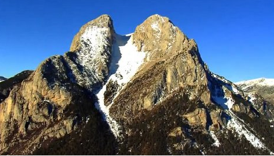

Centre Excursionista de Catalunya
El Centre Excursionista de Catalunya és una entitat fundada l'any 1876 amb el nom d'Associació Catalanista d'Excursions Científiques per Pau Gibert, Josep Fiter, Eudald Canivell, Romà Amet, Marçal Ambrós i Ramon Ambrós després d'una excursió al Montgat, quan decidiren de fundar una entitat que fes sortides per tal d'estudiar les riqueses de Catalunya sota els diferents aspectes científics, literaris i culturals 
El 1878 s'hi escindí l'Associació d'Excursions Catalana, però el 1890 els presidents de les dues associacions, Francesc Ubach i Francesc Maspons, acordaren la fusió en una sola entitat i adopta el nom actual, sota el patrocini d'Antoni Rubió i Lluch, que en serà el primer president.
L'any 1893 el CEC va donar una pica baptismal al monestir de Santa Maria de Ripoll, en ocasió de la consagració del nou temple.
Als seus locals i sota el seu patrocini es van fundar l'Institut d'Estudis Catalans i s'hi celebrà el Primer Congrés Internacional de la Llengua Catalana. Des del 1904 s'organitza en seccions, i entre elles la Secció d'Esports de Muntanya va popularitzar l'alpinisme i els esports de neu, alhora que organitzaven una xarxa de xalets-refugi de muntanya.
Culturalment i esportivament, el CEC assoleix la plenitud a la primera meitat dels anys 30 del segle XX amb l'impuls dels treballs de la divisió comarcal de Catalunya, proposada per Pau Vila, que fou president del Centre. Mentre, els alpinistes i escaladors del CEC assoliren gairebé tots els cims dels Pirineus, obriren noves vies d'ascensió i popularitzaren l'excursionisme. L'esquí s'afermà com una modalitat sòlida d'esport de muntanya i el CEC fou reconegut internacionalment quan entrà a formar part de la Unió Internacional d'Associacions d'Alpinisme (UIAA)